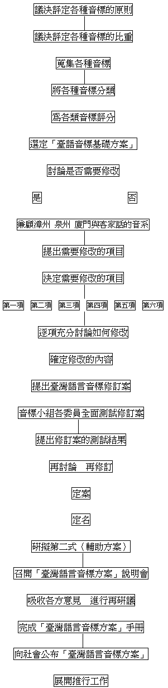

| TLPA音標歷史 |
臺灣語言音標方案的擬議和完成
臺灣語言音標研究小組副召集人
董忠司
一、前言
臺灣的語言（閩南話和客家話），雖然一向有教會羅馬字與漢字可以用來記錄。但是，自從十九世紀以來，在外來的政治控制下，未曾真正推行過；而且，教會羅馬字不全適合現代的電腦，實在需要略做修訂。於是，各種修訂方案此起彼落；甚至有一個人主張三四套音標的，令人眼花撩亂、無所適從，對於臺灣語言的學習和發展，發生了停滯不前、浪費人力、甚至傷心欲絕的局面。
有鑑於此，一群有志的學者，經過千阻萬難，一九九一年八月十七日成立了「臺灣語文學會」（TAIWAN LANGUAGES SOCIETY簡稱TLS）。其第一年的工作計劃中，明訂： 完成台灣語言音標，整理台灣漢語常用漢字，舉辦臺語研習營，召開臺語國際學術會議等重大工作。
有見於此，一群有志的學者，經過千阻萬難，一九九一年八月十七日成立了「臺灣語文學會」（TAIWAN LANGUAGES SOCIETY簡稱TLS）。其第一年的工作計劃中，明訂： 完成台灣語言音標，整理台灣漢語常用漢字，舉辦臺語研習營，召開臺語國際學術會議等重大工作。
緊接著，同年八月三十一日下午假臺灣師範大學，成立「臺灣語言音標研究小組」，召集人為臺大教授黃宣範，副召集人為新竹師範學院董忠司，和高雄師範大學教授鍾榮富，並請董忠司蒐集臺灣語言與音標研究論著目錄。
二、臺語音標第一次研討會
九月十一日寄出書目（一一一種）和論文目錄（八十七種），供音標小組各委員參考，十月六日舉行「臺語音標第一次研討會」（新雨佛教中心，臺北市八德路二段二四五號十一樓之三），由於參加研討會的人都是受過學術洗禮的學者，因此討論的態度、語言、方法、過程都力求嚴謹。本次會議的所有四個多小時都花在討論「評定各種音標的原則、標準和比重」，結果為：
四原則：
系統性、現實性、普遍性、方便性
十項標準：
社會………10% 好寫………10%
文獻………10% 好認………10%
歷史……… 1% 好學………10%
符號普遍…10% 好處理……10%
音讀普遍…15% 好注音…… 4%
雖然，參與會議所有學者和研究和教學工作，都非常忙碌；但是，仍然決定以每隔兩週開一次會，以加緊研議臺語音標，希望能早一些協助全臺灣的人民，解決書寫的困難。
三、依序展開各項工作
「臺灣語言音標研究小組」在議決「評定各種音標的原則」以後，接著要討論的是

四、臺語音標第二次研討會
十月二十日召開「臺語音標第二次研討會」（新雨佛教中心，臺北市八德路二段二四五號十一樓之三），這時加入音標小組的會員，已有十七人，包括：
曹逢甫（清華大學教授）
張裕宏（臺灣大學教授）
姚榮松（師範大學教授）
殷允美（政治大學教授）
羅肇錦（臺北師院教授）
臧汀生（逢甲大學教授）
鍾榮富（高雄師大教授）
張文彬（師範大學教授）
董忠司（新竹師院教授）
黃宣範（臺灣大學教授）
龔煌城（史語所語言組組長）
徐金松（日本中國經濟研究所教授）
江永進（清華大學教授）
洪惟仁（史語所助理研究員）
張月琴（清華大學教授）
陳恆嘉（東吳日研所研究生）
徐士賢（師大國研所研究生）
後來加入的有臺北商專教授程南洲博士，合計十八人：這些學者在往後的會議中，表現了淵博而沉穩的才華。
第二次的研討會中，首先對上次會議的「評選音標十項標準」重新檢討，重新定義，充分討論，並且重新審訂比重；然後再詳細地說明與分析各類音標，最後進行各類音標的評分，以選出擬訂「臺灣語言音標方案」的大方向。此次會議的重要結論有：
- 修訂評選音標十項標準，合併「歷史」「文獻」為「歷史文獻」；刪除「好學」一項，成為八項標準。
- 訂八項標準的比重（並加以定義）為：
社會…………10% 好寫………15
歷史文獻……10% 好認………15%
符號普遍性…10% 好處理……20%
音讀普遍性…15% 好注音…… 5% - 評選音標的大方向（？羅馬字？ㄅㄆㄇ？十五音？假名式？諺文？其他？），結果各類音標的分數如下：
羅馬字ㄅㄆㄇ諺文假名式十五音總分 657512426348339名次 12345
評分結果以「羅馬字」為擬訂「臺灣語言音標方案」的大方案。
五、 語音標第三次研討會
「臺語音標第三次研討會」在十一月三日舉行（新雨佛教中心，臺北市八德路二段二四五號十一樓之三），重要結論有：
- 將羅馬字音標分為：教會羅馬字、林繼雄式拼調法、國際音標、王育德第三式、普閩式、科根化等六種，這六種已涵蓋所有已發表的方案種類。
- 依上次會議評分八標準，經過詳細討論，細心評分，全體出席學者選定教會羅馬字為「臺語音標基礎方案」。其各式羅馬字音標的評分結果如下：
教羅林繼雄國際王三式普閩式科根化總分 995682878719775490名次 152436
- 全票議決〝臺語音標基礎方案〞需要修改。
- 提出九個修訂項目：
- 鼻化元音（〝~〞這個符號在一般電腦上無法打出，手寫也容易遺漏-不易處理）。
- o‧[ɔ]（不易處理）。
- 聲調符號：（不易處理、不好認）。
- 〝ch,chh;〞（一個音位使用兩個符號不合系統性的原則，顧慮客語海陸話，應將此符號表齒上音）。
- 介音-o-（應一律用-u-）。
- -eng（與實際音值不合、又不成系統）。
- 增加漳泉客特殊符號（應兼顧各種重要的方言和次方言）。
- 〝j-〞[dz-]（與國際音標不一致）。
- 〝-h〞（沒有必要設此符號）。
- 經過非常詳細的長時間討論，結果為：「上文h.i.兩項不修；第f項保留「eng」，同時增加「ing」。餘六項需要修改。
贊成修改反對修改反對修改的理由 鼻化元音 110o‧[ɔ] 130聲調符號 120〝ch,chh〞 92介音-o- 84-eng 111＊增加-ing 漳泉客特殊符號 130〝j-〞 18不影響系統性 〝-h〞 19在音理上有必要
六、臺語音標第四次研討會
「臺語音標第四次研討會」於一九九一年十一月十六日（週六）1330-18：20，在師範大學第二會議室（臺北市和平東路一段）召集。依據上次會議的決議，由於牽涉到整個音系（聲、韻、調）的系統性、承先與啟後、語音與符號之間、現代臺灣語言（含閩南話與客家話）的次方言、本地語與外來語……等問題，因此進行了長時間的、非常詳盡的討論。有些議案曾動用表決五次以上，針鋒相對的語言時有所見，但是，人人堅持「學術的態度、民生的風度」，所以，語言雖然略見急促，卻一點也沒有面紅耳赤、氣急敗壞的現象，與會學者反而因為熱烈的討論，增進了彼此的瞭解，感情更融洽了。無怪許多人會後要說〝這種會議真好〞這樣的話了。
會議獲得了以下的結論：
- 議決聲調以數碼（阿拉伯數字）表示，如：a1ma2（阿媽）。
- 議決鼻化成份以〝nn〞來表示，如：sann1（衫）。
- 議決以〝oo〞標示國際音標的[ɔ]（開口的[o]）。
- 議決齒音以〝ts，tsh〞表示閩南語、四縣話的[ts][tsh]，以〝ch，chh，sh〞表示海陸話的[ʧ][ʧh][ʃ]及華語的ㄓㄔㄕ。
- 〝eng，ing〞這兩個符號，在使用時，以〝ing〞為主。
- 以〝ii〞表示客家話的舌尖高元音[Ɩ]，並用來表示泉州話的高央元音[ɨ]，用〝er〞表示中央元音[ə]。
- 肯定上次會議〝合口音〞一律以-u-表示〞的提案。
七、臺語音標第五次研討會
臺灣語文學會的「臺語音標第五次研討會」，一九九一年十二月一日假新雨佛教中心，（臺北市八德路二段二四五號十一樓之三）舉行，會議主要是針對上次所修訂的音標方案，討論半個月來的使用結果，並且集中精神研究臺灣話的聲調寫法、本調、變調、輕聲調、第九調、其他變調、外來語聲調等聲調問題，再討論方案名稱、第二式音標、如何舉行說明會、如何推行。
這次會議的重要結論有：
- 關於音標的修訂：
- 做為聲調符號的阿拉伯數字，應標寫於音節的右上角，如：tai5pak4（臺北）；如果有打字或電腦輸入等困難，可以依一般的寫法，如：tai5pak4.（臺北）。
- 注音時，一律標本調，不標變調。
- 輕聲調以〝0〞表示，如：khia7khi0lai0（徛起來）。
- 外來語不標調。
- 「八音」（八個聲調）之外，增訂高升調為第九調。如：〝下昏〞合音為[ing9]。
- 建議：在「臺灣語言音標方案」的使用下北京話的陰平、陽平、上聲、去聲等四聲，分別以「01，02，03，04」來表示。
- 此套音標定名為「臺灣語言音標」，簡稱「臺語音標方案」，英文名為〝TAIWAN LANGUAGE PHONETIC ALPHABET〞（TLPA）。
- 通過以朱兆祥、吳守禮的「臺語方音符號」為基礎，進行「臺灣語言音標方案第二式」的修訂。研究小組召集人為董忠司，副召集人為徐金松。
- 舉辦「臺灣語言音標方案說明會」（代替問卷工作），由理事會籌劃辦理。
- 決議將「臺灣語言音標方案」交給理事會確實推行。
經過了連續三個多月的努力（如果從準備成立學會算起，是八個月以上），到第五次會議的時候，身體已經相當勞累；但是，眼看新修訂的音標快要出世，臺灣人民自古以來缺乏音標、難以充分表達心聲的窘困階段就要結束，與會學者無不鼓起精神，繼續努力，把音標方案盡可能修到成熟的地步，希望全臺灣人民不要忘記他們的心血。
八、一次關係重大的理事會議
為了「臺灣語言音標方案」的推行工作，開完「臺語音標第五次研討會」，當天晚上立刻召開「臺灣語文學會第五次理事會」。與音標推展工作有關的決議事項如下：
- 與臺語文摘社會合聘秘書一人，月付部份薪水新台幣五千元。以推展會務，並全力推行「臺灣語言音標方案」。
- 決議修改原定問卷調查工作，改為舉辦「臺灣語言音標方案說明會」，時間為一九九二年三月初。
- 「臺灣語言音標方案說明會」由「臺語音標專題研究小組」召集人黃宣範、副召集人董忠司、鍾榮富、和羅肇錦、洪惟仁等五人組成籌備小組。
- 「臺灣語言音標方案手冊」由張裕宏主筆，並與姚榮松、董忠司、洪惟仁、和羅肇錦等共同討論。
- 希望本會會員多多寫文章，報導或研討有關「臺灣語言音標方案」。
- 《台語文摘》提供本會專欄，請會員多提供通訊，論文評介文字投稿。
由這次「臺灣語文學會理事會」這次會議的內容看來，「臺灣語言音標方案」的推行工作，已經開始進行了。
九、「台灣語言音標方案」的優點
這套集結台灣學者的智慧和心血的「台灣語言音標方案」，由於考慮到宜蘭腔、鹿港腔、臺北腔、臺南腔、四縣話、海陸話等臺灣漳泉客語諸方言；並且秉持：「重視歷史、尊重社會、力求普遍、切合系統、適合現實、配合科技，走向未來」等原則，以教會羅馬字為基礎方案，儘量保留教會羅馬字的優點，彌補其缺點，並擴大其功能，因此具備了十二項優點：
- 照顧了臺灣語言的社會生態。
- 舊有臺灣話文獻，如教會羅馬字的相關書籍，以及其他書寫系統的文獻，仍然可以經由簡單的符號對照表，順利的閱讀。
- 兼顧了臺灣話漳泉各方言，和客家話的四縣，海陸兩大方言。
- 呈現相當程度的系統性。
- 具備了音標符號的普遍性，本地與島外各語言都能容易的讀出音來。
- 具備了音讀的普遍性，本地與島外各語言都能容易的讀出音來。
- 好學-字母不多（臺灣話只用十七個，客家話只用二十），寫法簡單。
- 好認-筆形與英文同，符號分辨性與之相同。
- 好處理-一般的打字機、電腦、排版作業等人工書寫方式的處理，比其他音標方式更方便。
- 容易注音-為漢字注音時，因為此音標方案的每一符號只佔半形，又無附加符號，相當容易注音。
- 此音標方案的功能，比其他臺灣話標音法更強。
- 「前修未密，後出轉精」這一套是最具現代語音學精神的音標方案。
這些優點呈現為《台灣語言音標方案手冊》，《手冊》由臺灣大學教授張裕宏主筆，內容精審。大約在1992年春，會隨著充滿生機的春天，像播種一樣的，散布到全臺灣。凡我臺灣同胞，應該人手一冊，用心學習。
十、推展的工作是我們萬世的大業
經過了日夜苦思，周密研議，考慮各種狀況，蒐集並且研究各家所有的音標方案，聽取各方的意見，詳列工作計畫，擬訂進行的步驟：一切都在「嚴謹的學術態度、寬容的民生方式、和諧的社會倫理、無私的個人操守、純正的歷史使命」的運作下，「臺灣語言音標方案」就這樣修訂完成了。所有與會學者，都覺得這是可以接受，可以代替其他方案，可以順利推行的一套最好的臺灣語言的音標，相信由全世界其他學者重頭再去擬訂一套，結果也不過如此。
這一套音標方案就叫做「臺灣語言音標方案」，簡稱為「臺語音標方案」，英文名稱為〝 TAIWAN LANGUAGE PHONETIC ALPHABET〞〈TLPA〉。
一九九二年三月初，「臺灣語文學會」將公開的舉行一場「臺灣語言音標方案說明會」，將聘請十名左右的語言學者，來為這套音標做解說，請社會大眾共同來關心臺灣語言的未來。
至於臺灣語文學會的「臺灣語言音標專題研究小組」所有會議記錄，將會在明年根據錄音帶，編輯成冊，做為臺灣語文的重要文獻，公諸於世。（包括準備行使用於小學，做為輔助工具的「台灣語言音標方案第二式」的修訂會議記錄）。
只有這樣還不夠，「臺灣語文學會」的教育委員會，將來還會大力舉辦臺灣語言入門班、臺灣語言研習班、臺灣語言研究班、臺灣語言與文學研究班等教學活動。學術委員會、出版委員會、和教育委員會也要研究並出刊各種教材，各種教學法、各種辭典、各種字典、各種文學創作、各種民間文學、各種學術論著等書籍或非書文獻，協助臺灣文化的成長和茁壯。
不僅在台灣推行，將來，這一套音標還可推行到中國大陸，做為標寫中國大陸的閩南方言，客家方言的符號；也可推行到世界各地，做為聯合國承認的重要語文，做為外國人士學習閩南語的主要工具。因為，這一套「臺灣語言音標方案」是目前最好的臺灣語言音標，也是最切合現代語音學理，最具系統性的音標。
其實，上述「臺灣語文學會」的這些工作，本來應該由臺灣最高行政單位來負責。但是，等了四十幾年，樓梯不響，「無聲無說」，實在等不下去，「姑不二章」，別人不做或做不來的，只好讓「無權無錢、有情有義」的一群學者來挑重擔了。
現在，「臺灣語言音標方案」就要推行了，需要我最親最愛的臺灣同胞大家的熱心參與，提供人力，支助財力，群策群力。讓我們以溫熱的同胞愛，來互相呵護吧！